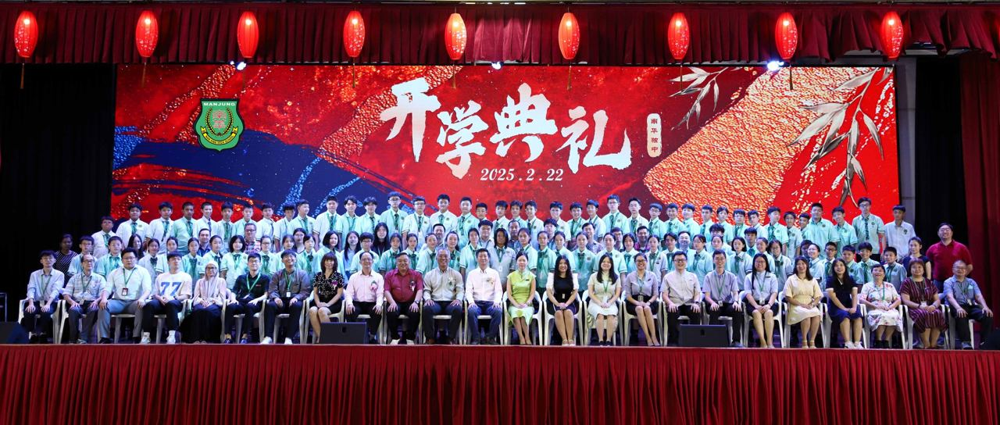
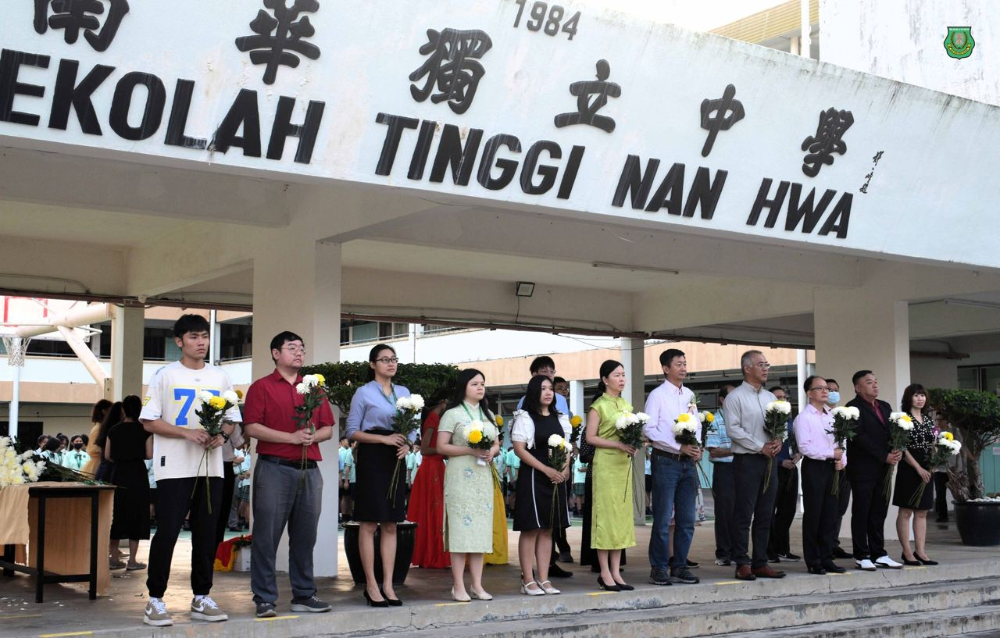
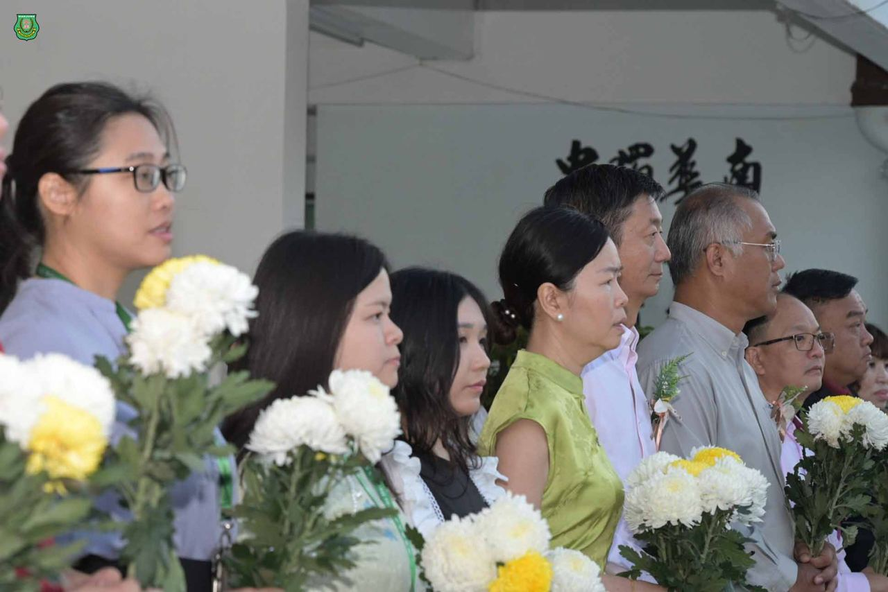
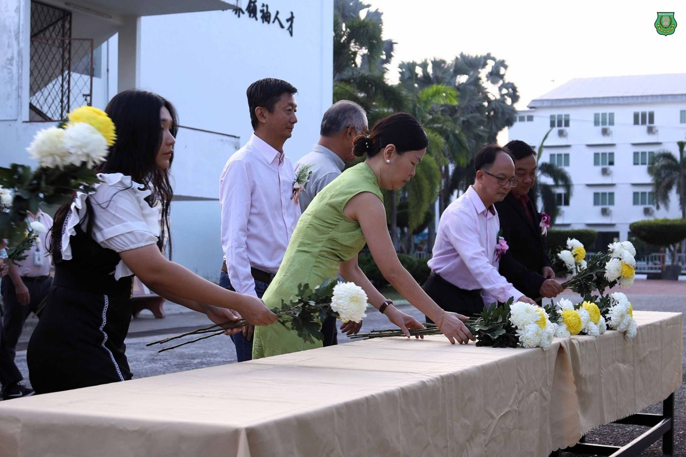
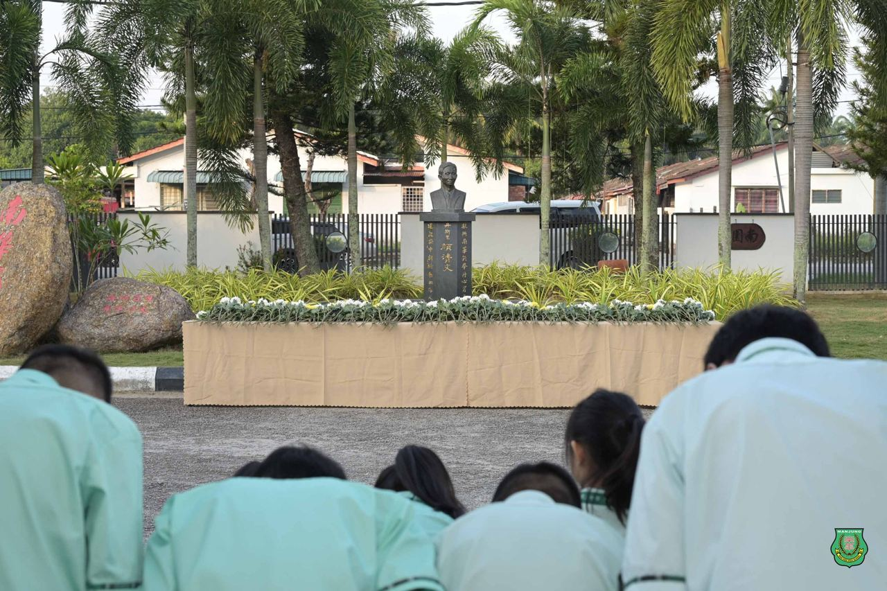
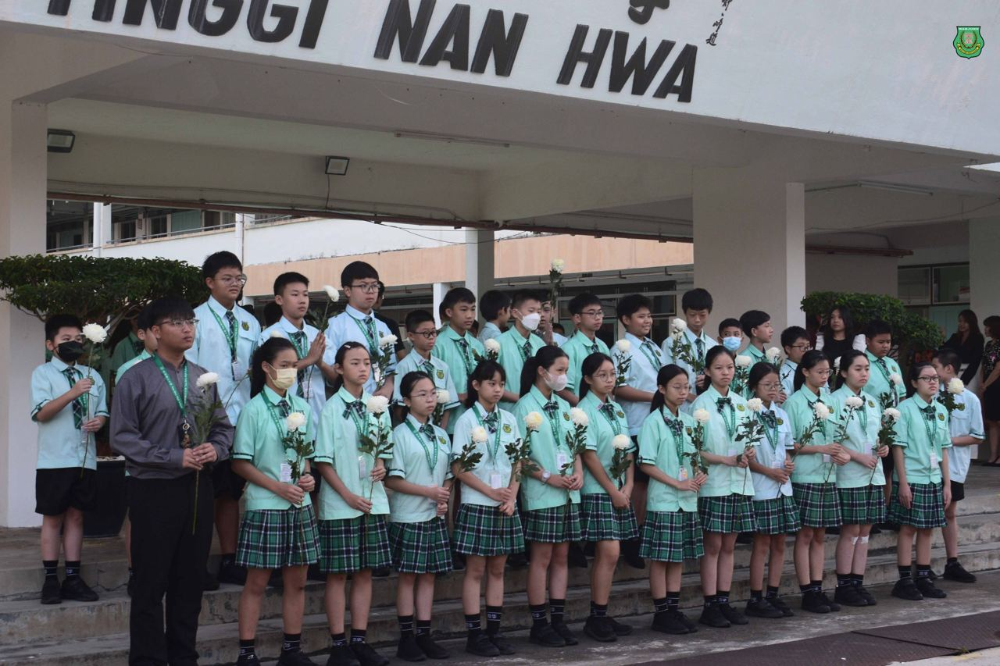
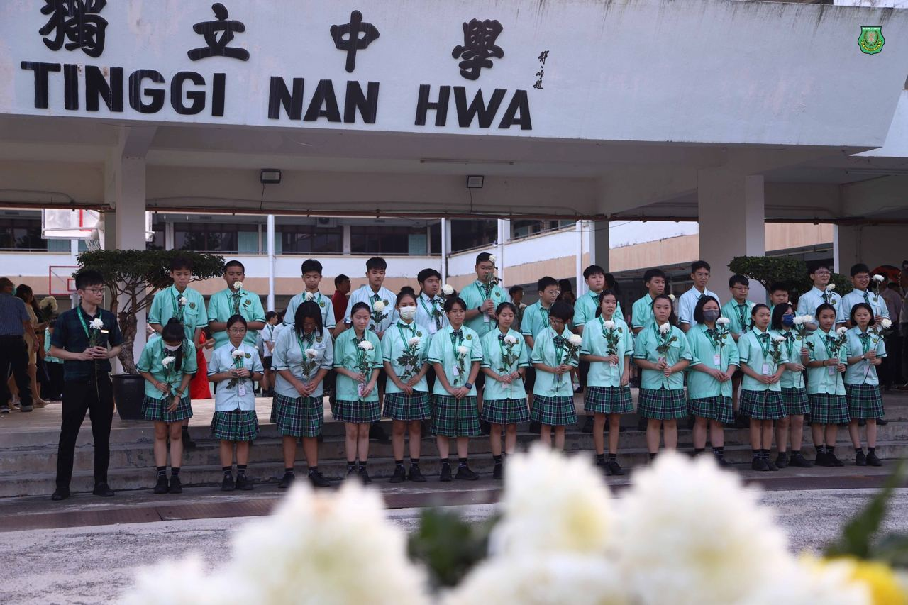
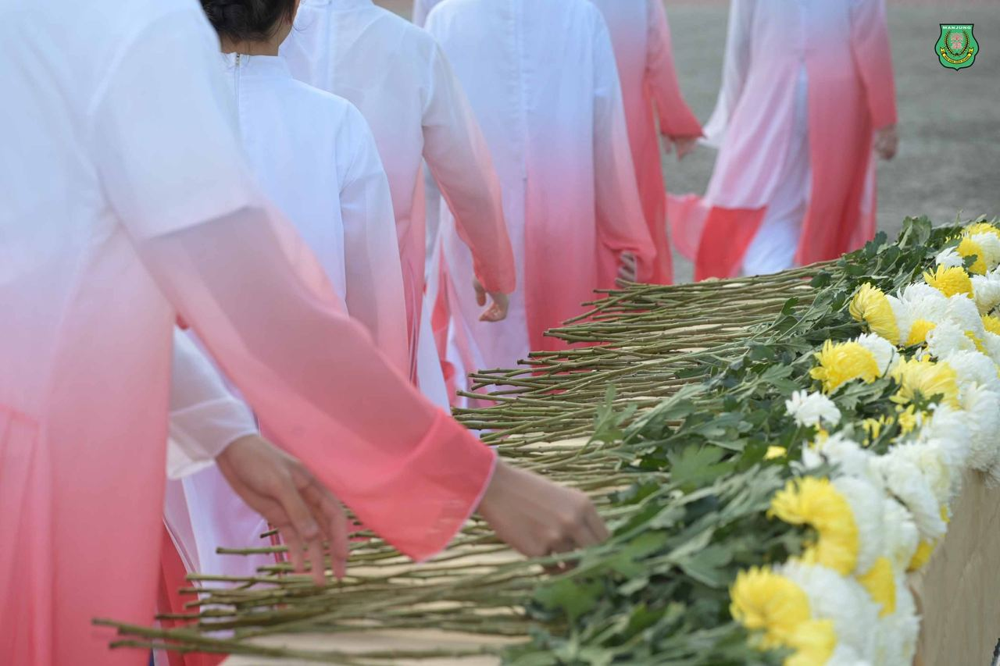

南华独中2025年开学典礼
南华独中2025年开学典礼
喜迎84位新生加入南华大家庭
曼绒南华独中以庄重的仪式与精彩的文艺表演举办开学典礼，全体董家教师生热烈欢迎84位新生与插班生加入南华独中大家庭。
按传统惯例，开学典礼进行前全体人员向“南华独中之父”丹斯里颜清文铜像献花，以表达对先贤为华文教育无私奉献的敬意。尔后，新生们登台领取学号，正式成为南华独中的一员，开启崭新的求学旅程。
董事长颜登逸先生在致辞中强调，面对未知的环境，学生们需要具备解决问题的能力，勇于突破困境。南华独中的办学理念——“培养引领21世纪中华文化素养领袖人才”，以及“学会读书，学会做人”的办学方针，正是为了培养具有综合素养的未来人才。他特别澄清了关于“快乐学习”的迷思，指出真正的快乐学习并非“躺平式”学习，而是通过努力付出、克服挑战，在最终收获成果时体验真正的快乐。颜董事长以登山为喻，指出成长的过程必然伴随着挑战，但登顶后的成就感是无法取代的。此外，颜董事长谈及人工智能（AI）的发展趋势将会淘汰跟不上时代变迁的人们，为确保学生不被时代淘汰，本校将培养学生的人工智能素养，使他们具备同理心、语言能力、基础数理知识以及人文与审美素养，以便在AI时代具备竞争力。颜董事长最后以“三个祝愿”勉励全体学生在新学年中：“祝愿你一直奔走在自己的热爱中；祝愿你所求皆如愿；祝愿你学业有成！”
校长陈丽冰博士则勉励学生铭记并践行南华独中的校训“明德·格物·致知·笃行”，强调学校不仅重视知识学习，更注重人格培养，致力于传承中华文化，打造人文校园。从2022年至2025年，学校已逐步将校本课程与选修课的选择权交给学生，帮助他们完善知识结构，发展个性特长，为未来奠定坚实基础。陈校长指出，教育的核心是“为学生而生”，最好的教育不是完全摒弃传统，而是将传统教育与未来教育有效融合。她提及人工智能平台DeepSeek和电影《哪吒》的精神，鼓励学生们以智慧与信念打破命运的枷锁，点燃热情，书写属于自己的传奇。陈校长最后祝福学生们：“愿你以DeepSeek的智慧为种，以哪吒的勇气为帆，在知识的海洋中乘风破浪，共同前行。”
家长联谊会主席叶燕妮女士鼓励学生珍惜时间，努力学习，全面发展，成为兼具学识与品德的新时代人才。她强调，教育的成功离不开家庭与学校的紧密合作，并承诺家长联谊会将继续全力支持学校，与教师保持密切沟通，共同为孩子们创造良好的成长环境。
校友会主席林嵩胜先生则鼓励学生善用人工智能工具，以创造自身价值。他指出，南华独中的选修课培养了学生的自信、沟通能力及独特价值，而真正的学习不仅是知识积累，更要将其转化为日常可应用的技能。他希望同学们在学习技能的同时，也要培养敏锐的观察力与高效的处事能力，以适应未来社会的变化。
开学典礼上，学校特别颁发第49届全国独中统一考试优异成绩奖，以表彰在考试中取得优异成绩的同学，鼓励全体学生向优秀榜样看齐。
本次开学典礼出席嘉宾包括董事长颜登逸先生、董事总务何添胜先生、董事副总务林道祥先生、家长联谊会主席叶燕妮女士及校友会主席林嵩胜先生。南华独中2025年开学典礼在热烈的氛围中圆满落幕，为新学年的启程奏响了奋进的序曲。







